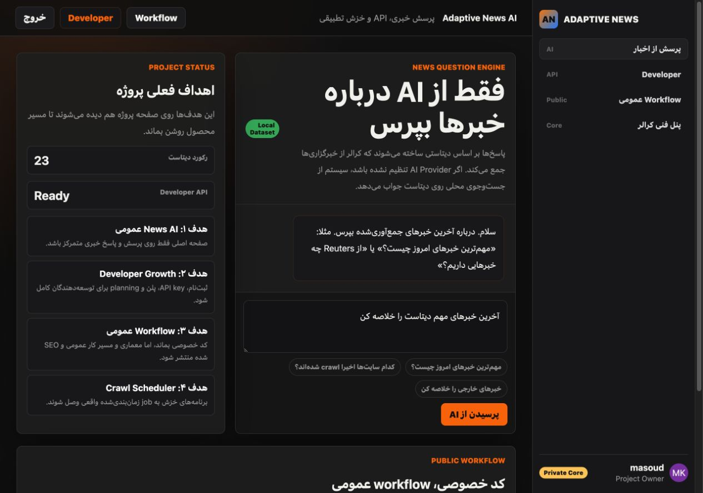
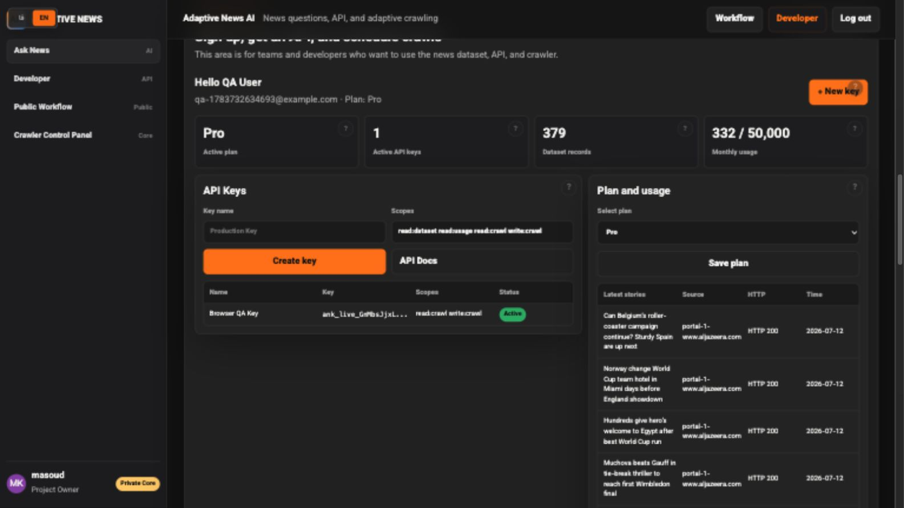
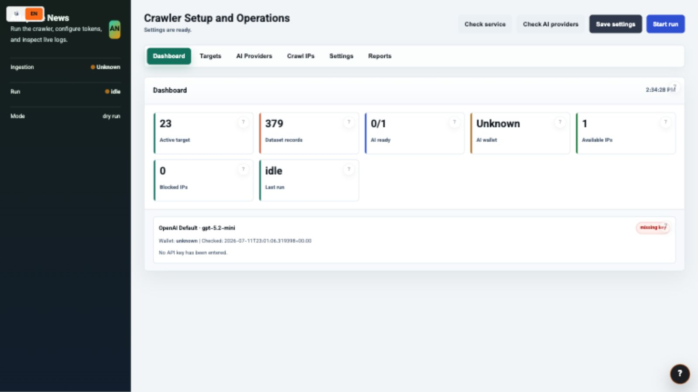

Discover
Read robots, sitemap indexes, news sitemaps, and common paths.

Adaptive news intelligence infrastructure
A lean news intelligence platform for discovering sources, running persistent crawls, enriching stories with AI, and serving controlled datasets through a Developer API.
End-to-end workflow
The core combines deterministic crawling with optional AI decisions, keeping the baseline efficient while leaving room for source-specific intelligence.
Read robots, sitemap indexes, news sitemaps, and common paths.
Rank likely stories with URL heuristics and optional AI classification.
Rotate managed crawl IPs and retain HTTP, redirect, and latency history.
Resolve titles, canonical URLs, language, categories, and source tags.
Add AI summaries, entities, and topical tags through routed providers.
Store records locally and expose controlled fields through scoped APIs.
Operational depth
Built for a pragmatic single-server deployment, with the controls a real news operation needs from day one.
XML and gzip sitemaps, unseen URL backfill, resilient title extraction, and publisher taxonomy.
Proxy rotation, direct fallback, health history, quarantine, blacklist detection, and capacity advice.
Route classification, sitemap analysis, article extraction, and summarization to different endpoints and models.
Hashed API keys, scopes, search and taxonomy filters, monthly quotas, rate limits, and usage reporting.
Atomic claims, run history, restart recovery, isolated seen-state databases, and quota-aware scheduling.
Live logs, exact HTTP codes, dataset exports, AI status, wallet warnings, and component-level bug triage.
Complete feature catalog
A complete catalog of crawler, network, extraction, AI, API, scheduling, operator, localization, and deployment capabilities.
Product surfaces
The public news interface, Developer Portal, and technical control panel share one platform while keeping their responsibilities clear.
A direct question interface backed by the collected dataset, with local search fallback when no AI provider is active.

Self-service accounts, plan selection, scoped API keys, usage visibility, dataset access, and persistent crawl plans.

Targets, AI providers, crawl IPs, HTTP status, live logs, reports, exports, and unresolved feedback in one place.
Flexible deployment
Deploy the complete platform on one Linux server, a customer cloud, or customer-managed infrastructure with persistent Docker volumes and versioned updates.
Frequently asked questions
Concise answers for teams evaluating the crawler, Developer API, deployment model, and product experience.
Adaptive News AI is news intelligence infrastructure that discovers sources, crawls articles, enriches records, schedules recurring jobs, and serves controlled datasets through a Developer API.
Yes. Deterministic sitemap discovery and URL scoring continue without AI. Optional providers improve URL classification, extraction, summarization, entity detection, and tagging.
The operator can configure multiple HTTP or HTTPS proxies, retain direct server fallback, rotate requests, quarantine unhealthy endpoints, detect blacklist conditions, and review capacity recommendations.
Scoped API keys provide controlled article records, search and source taxonomy filters, usage reporting, and crawl-plan operations. Raw HTML and operator state are excluded.
Yes. The platform is designed for a lean Docker-based single-server deployment with persistent local state and optional integration with a separate ingestion service.
Yes. A dedicated email/password preview shows realistic sources, crawl plans, AI health, usage, and dataset records. Preview accounts are read-only and cannot create keys, run crawls, or change production settings.
Yes. Operators can attach host-scoped Basic, Bearer, custom-header, or existing session-cookie profiles to targets they are authorized to access. The crawler does not bypass paywalls or publisher controls.
Commercial and custom builds
Request custom source onboarding, self-hosted deployment, ingestion integration, AI-provider routing, API schema changes, reporting, or a branded customer experience.
Request customizationDo not include credentials, datasets, or confidential business details in a GitHub issue.